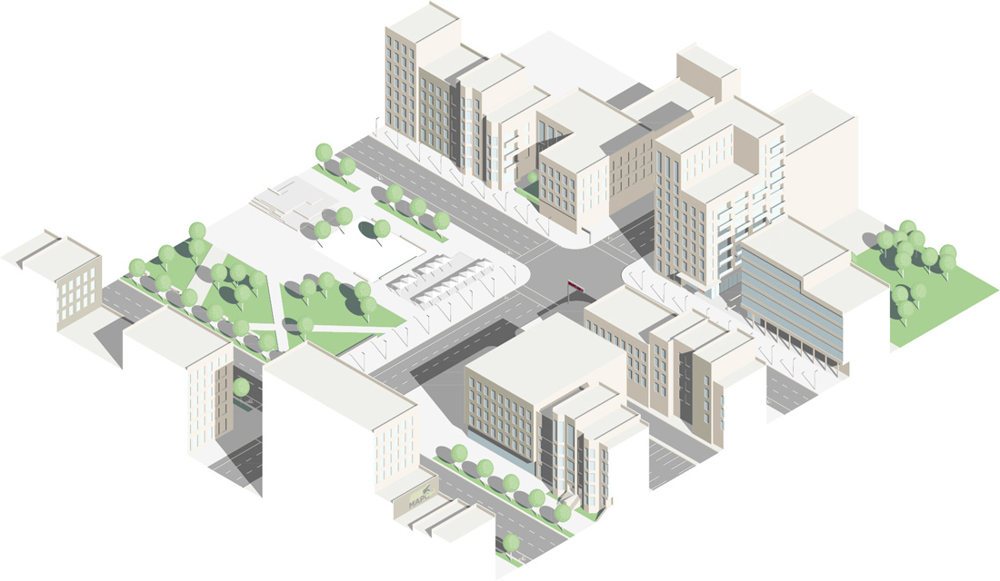

Crime is not spread evenly across geographies—it clusters in some areas and is less prevalent in others. People know this and use this knowledge every day when they avoid some places and seek out others. It influences people’s choices of neighborhoods, schools, shops, and place of recreation. In this way, crime is an issue that influences health in a variety of direct and indirect ways. Direct impacts can be both physical injuries and psychological trauma as a result of being victimized while indirect impacts operate mostly at the neighborhood level and include a wide range of negative effects such as poorer physical and mental health, particularly for children and young people.1 Fear of crime, for example, can heighten feelings of anxiety and may constrain some people’s social and physical activities as they attempt to avoid certain places or situations that they perceive to be unsafe.2
Crime is associated with the design and layout of neighborhoods,3 and, in turn, design of the built environment has effects on physical health, social and emotional wellness, social cohesion, and feelings of security. One commonly cited place-based crime prevention strategy is Crime Prevention Through Environmental Design (CPTED). CPTED strategies are aimed at maximizing features of the built environment that reduce crime. For example, well-lit and well-maintained walkable spaces with good visibility and access to shops, parks, and other amenities have been shown to reduce rates of crime and fear of crime.4 Results are encouraging, as communities that have used CPTED strategies have experienced reductions in crime.5
Crime Prevention Through Environmental Design (CPTED pronounced SEP-TED) is a concept that asserts that “the proper design and effective use of the built environment can lead to a reduction in the fear of crime and the incidence of crime, and to an improvement in the quality of life.”6 The purpose is to introduce CPTED concepts and provide examples of how CPTED can be applied to enhance the look and feel of safe places. Because there is no one way to implement CPTED principles, this document strives to provide a framework to how designate, define, and design healthy and safe places by incorporating context-specific CPTED strategies. In this case, environmental design is defined as physical design and immediate situational factors such as site design, territorial boundaries, the number of people using or observing the space, the purpose of their use, temporal factors, and disorder. It does not include broader socio-cultural factors such as poverty level, racial and gender inequality, family structure, criminal laws, and exposure to violence.
One of the ways MAPC works to realize the vision of a greater Metropolitan Boston region is through planning and policy work. Crime prevention is a priority for public officials working in the fields of public security, planning, public health, and community development. Our Public Health, Municipal Governance, and Land Use departments work on projects at the municipal and regional levels that advance the following MetroFuture goals:
CPTED is not a stand-alone answer to preventing neighborhood crime, however it does outline social, policy, and planning interventions that can bring together planning and public health professionals to create safe and healthy communities and public spaces in our neighborhoods.
CPTED can include anywhere from three to six principles. This toolkit discusses four principles in depth because these four represent a balance of design-oriented principles and policy-oriented ones. The four overlapping principles of CPTED are7:
These strategies are context-specific and must work together in order to be most effective. The following sections provide details and examples of the four principles of CPTED.
CPTED principles advocate for the integration of design elements combined with activities that create an environment where informal natural surveillance occurs more easily. This is also referred to as the “eyes of the street” concept that safe spaces are nurtured when the community has the opportunity and an underlying investment to observe, intervene and/or report potential crime to ensure a safe public space.
Depending on the position and use, physical barriers in public spaces such as tall dense bushes, buildings, tall fences, and recesses can inhibit views of public spaces like intersections, streets, playgrounds, and parks. A space can be designed to maximize natural surveillance and visibility by creating clear sightlines to avoid blind spots (the inability to see what is ahead along a route due to sharp corners, walls, fences, tall bushes, etc. can shield a potential attacker and make a person feel unsafe), maintaining quality lighting, and using materials, usually transparent or reflective, to prevent concealed or isolated routes or spaces.
Surveillance can be “active” or “passive”. Active surveillance refers to intentional activities and mechanical strategies, such as police patrols, security guards, and formal observation systems (e.g., CCTVs, observing points, and street lighting). Passive surveillance is facilitated by planned social activities, such as markets and performances, which encourage more people to be out in a community. For passive surveillance to be successful, the physical design must include appropriately sited physical and natural amenities that enable broad view by residents, visitors, and passersby.8
Public spaces that feel open and accessible can attract a more diverse range of users, which increases opportunities for natural surveillance. While design elements enabling natural surveillance may increase opportunities for viewing activities that occur in a public space, it does not guarantee that routine surveillance will take place or that reporting of suspicious activity will occur. One way to strengthen ownership of a public space is to engage residents and future users of a space in planning for design or construction of a space.9 Relevant stakeholders include residents, workers, and business or property owners in adjacent buildings – individuals who could be in a position to feel like there are custodians of the area and invested in observing and reporting unusual behavior.10
Policy and planning elements that facilitate natural surveillance in public spaces include:
Access control relies on physical elements to keep unauthorized persons out of a particular space if they do not have a legitimate reason for being there as a strategy to decrease the opportunity for crime. It relates to the control of who is allowed into a particular enclosure or other demarcated territory.12
The environment must offer clues about who belongs in a place, when they are supposed to be there, where they are allowed to be while they are there, what they should be doing, and how long they should stay.13 Modifications to the built environment can be made to reduce opportunities for violence and crime, making the event appear riskier, more difficult, less rewarding, and less excusable to the potential offender.14 The modifications can include the means of exit for potential intruders; that is, if offenders feeling that leaving the place of crime would be difficult, it may serve to deter them from attempting entry in the first place.15
At its most basic form, the adequate use of locks, doors, fences, and window barriers can provide access control in residential and commercial establishments. The concept of access control also can be broadened to include “natural” element to form spatial definition, e.g., shrubs that do not actually deny access but instead provide a signal that an area is off-limits or under care and observation.16
The following list provides examples of elements that can be incorporated to increase access control17:
In addition to the elements listed above, this section provides additional design elements for specific types of properties. The categorization of properties is intended to organize the suggested elements by where they are most likely applicable. In some cases, however, elements listed for one type of property could be applicable for other types (e.g., guidance on fencing for residential developments could apply to retail establishments).
In front yards, use waist-level, picket-type fencing along residential property lines can help control access and encourage surveillance. Use shoulder-level, open-type fencing along lateral residential property lines between side yards and extending to between back yards. They should be sufficiently clear of landscaping to promote social interaction between neighbors. Poorly defined front and rear yards could be defined by a small fence or by regular maintenance of the surrounding landscape.
For multi-family developments, elements such as drain pipes, parapets and ledges should not be located near windows, corridors or balconies. If unavoidable, they should face parking lots, children’s playground or roads to allow for natural surveillance. Mail boxes should be visible by the residents at the interior of the building corridor.
Retail establishments, especially those most likely to attract crime, can benefit from visible security cameras and alarm systems to deter criminal activity. Temporary street closings to automobiles can reinforce the pedestrian experience, thus making it safer, while also limiting easy means of escape from criminal activity.20
It is important to avoid creating hiding spaces in alleys, storage yards, and loading areas. For example, although in some cases hedges can define spaces, they also have the potential to provide convenient hidings spaces if placed too close together. If restrooms are available to the public, they should be located in highly visible areas.
Access control can apply both to private property and public spaces. In the latter case, the application of access control needs more care. Properly located entrances, exits, fencing, landscaping and lighting can subtly direct both foot and vehicular traffic in ways that decreases criminal opportunities.21 In these situations it can be useful to provide a clearly marked transition from public to semipublic to private space.22 Easy hiding places, such as sitting walls in lieu of benches, should be avoided.23
Semipublic spaces, such as subway stations can deter crime by omitting public restrooms, luggage lockers, and excess seating space to discourage potential offenders from lingering and assessing targets. In addition, avoiding long and winding passageways and corners to reduce shadows and places limits where potential offenders can hide.24
There is some evidence that areas that are not well connected, such as cul-de-sac developments attract less crime than well-connected spaces.25 This evidence, although not unequivocal, has led some criminology advocates to advocate for more cul-de-sacs, as higher crime has been observed in areas with high connectivity (also known as highly permeable places). The explanations for this are:
There are, however, a number of negative aspects to poorly connected developments, such as cul-de-sacs. These include an over reliance on automobile usage (which can lead an increase in congestion and air pollution), sprawl (through the inefficient use of space), and a difficulty of ensuring public transportation options. Furthermore, some research has suggested that well-connected spaces provide great social cohesion and reduced perceptions of fear of crime.26 In addition, the literature supporting low connected developments as a means of deterring crime may not have taken into account confounding factors, such as the socioeconomic status of the neighborhoods in question.
Given the inconclusive evidence of supporting low-connected developments, as well as the acknowledged negative externalities that accompany this typology, they should, in general be avoided. In known crime hotspots, however, limiting access can have beneficial effects. For example, to address gang-on-gang violence in Los Angeles, a two-year program, “Operation Cul de Sac,” was launched in January 1990 around a 10-block area that was the site of a high incidence of violent crimes. Researchers believed that gangs committed crimes on streets that afforded easy automobile access to crime opportunities and escape from arrest. Traffic barriers were built at the end of all streets leading to major roadways, effectively closing off access to and from the hot spots. During the study period, crime was significantly reduced, e.g., homicides fell from 7 per year to 1.27
Territoriality is a concept that seeks to strengthen people’s sense of ownership or sense of responsibility or stewardship over a private or semi-public space. It is the emotional concept tied to place that makes it unique. This concept requires particular roles to be understood: owner, occupier, visitor, intruder, etc., because a territory draws its meaning from who owns it (real or perceived)and who is misusing it in addition to where its boundaries are. If those in a community feel greater ownership over a space, the community is more likely to protect, report suspected criminal activity, or directly monitor the safety of the space. Neighborhood park associations and neighborhood watch groups are examples of community organizations that enhance territorial enforcement.
Feelings of territoriality by both owners and visitors may be prompted by a range of physical features: signs, green spaces, fences, colors, or even “beware of dog” notices. A sign of positive territorial enforcement is well-maintained, well-kept physical infrastructure, like lighting, seating, public art, vegetation, etc. Negative signs of territorial reinforcement also occur when areas become offensible space for gangs or other groups that are seeking to intimidate others. Territorial signs and markers—whether private or some kind of authority symbol—can often become common targets for defacement.
Policy, planning and participatory elements that facilitate territoriality by users of public spaces include:
The physical condition and image of the built environment and its effect this on crime and the fear of crime has long been acknowledged. 28 Promoting a positive image through proper management and maintenance of the built environment ensures that the physical environment continues to function effectively and transmits positive signals to all users.29 The CPTED principle of “Maintenance and Management” refers to one’s sense of pride of place, e.g., the more dilapidated a place is, the more likely it is to attract unwanted activities.30
There are numerous examples where proper maintenance and management have helped to deter crime. For example, the announcement and opening of a light rail station in North Carolina saw crimes decrease in the area, due in part to improved maintenance of the area in question.31 In Santa Cruz, California, a street that was plagued by crime underwent an extensive renovation.32 The appearance of the street was improved to make it appear more defended and cared for. Although the police presence abated after the opening of the renovated street, actual crime fell.33
A well-maintained space conveys a message of ownership. Developing a positive image can also encourage user and investor confidence and increase the economic vitality of an area.
The following elements can increase “pride of place” through maintenance and management practices:34
CPTED principles can lead towards safer, healthier places. Municipal staff can use CPTED principles to encourage revitalization of derelict or vacant public areas in close proximity to a diversity of uses include residential, commercial/industrial areas and in public spaces including large parks, pocket parks, common areas, major intersections, and other key public spaces. Public health professionals can use CPTED principles to implement social programs and policies to activate public spaces and build community ownership. Public safety officials can work with communities to implement policing programs that are culturally appropriate and build trust with community members and community groups.35
The desired effects of CPTED could be strengthened by creating an environment to foster more social interactions and social cohesion. One was to do this is through photovoice. Photovoice participants can identify, represent, and enhance their community by using pictures to express their reality or experience while minimizing language or cultural barriers. In doing so, photovoice seeks to give the power and voice back to the community to express their community’s strengths and needs. This inclusive, grassroots approach to community engagement allows a population to advocate their concerns using their language and experience to people that make decisions over their daily lives.
MAPC has piloted photovoice projects with youth around the theme of community safety.
An environmental crime-prevention strategy which seeks to prevent residential crime through the solution of urban design and physical environmental modifications.
A criminology theory states that any signaling of untended or abandoned maintenance of urban disorder increases vandalism on top of additional crime and anti social behavior. However if the environment is maintained and monitored which eventually will prevent further vandalism and the possibility of escalating into more serious crimes.
A theory that suggests offenders’ rational decisions to commit a crime in a given opportunity based on two factors: the environment which one is situated in and the motivation to engage in a crime.
Anderson, James M., John MacDonald, Ricky N. Bluthenthal, and J. Scott Ashwood. 2013. “Reducing Crime by Shaping the Built Environment with Zoning”. Product Page. http://www.rand.org/pubs/external_publications/EP51286.html.
Billings, Stephen B., Suzanne Leland, and David Swindell. 2011. “The Effects of the Announcement and Opening of Light Rail Transit Stations on Neighborhood Crime.” Journal of Urban Affairs 33 (5): 549–566. doi:10.1111/j.1467-9906.2011.00564.x.
Dannenberg, Andrew L, Richard J Jackson, Howard Frumkin, Richard A Schieber, Michael Pratt, Chris Kochtitzky, and Hugh H Tilson. 2003. “The Impact of Community Design and Land-use Choices on Public Health: a Scientific Research Agenda.” American Journal of Public Health 93 (9) (September): 1500–1508.
Foster, Sarah, Billie Giles-Corti, and Matthew Knuiman. 2010. “Neighbourhood Design and Fear of Crime: A Social-ecological Examination of the Correlates of Residents’ Fear in New Suburban Housing Developments.” Health & Place 16 (6) (November): 1156–1165. doi:10.1016/j.healthplace.2010.07.007.
Hale, C. 1996. “Fear of Crime: A Review of the Literature.” International Review of Victimology 4 (2) (January 1): 79–150. doi:10.1177/026975809600400201.
Hedayati Marzbali, Massoomeh, Aldrin Abdullah, Nordin Abd. Razak, and Mohammad Javad Maghsoodi Tilaki. 2012. “The Influence of Crime Prevention through Environmental Design on Victimisation and Fear of Crime.” Journal of Environmental Psychology 32 (2) (June): 79–88. doi:10.1016/j.jenvp.2011.12.005.
Lipton, Robert, Xiaowen Yang, Anthony A Braga, Jason Goldstick, Manya Newton, and Melissa Rura. 2013. “The Geography of Violence, Alcohol Outlets, and Drug Arrests in Boston.” American Journal of Public Health 103 (4) (April): 657–664. doi:10.2105/AJPH.2012.300927.
Liska, Allen E., Andrew Sanchirico, and Mark D. Reed. 1988. “Fear of Crime and Constrained Behavior Specifying and Estimating a Reciprocal Effects Model.” Social Forces 66 (3) (March 1): 827–837. doi:10.1093/sf/66.3.827.
Loukaitou-Sideris, Anastasia, and John E Eck. 2007. “Crime Prevention and Active Living.” American Journal of Health Promotion: AJHP 21 (4 Suppl) (April): 380–389, iii.
Mair, Julie Samia, and Michael Mair. 2003. “Violence Prevention and Control through Environmental Modifications.” Annual Review of Public Health 24: 209–225. doi:10.1146/annurev.publhealth.24.100901.140826.
Minnery, J. R., and B. Lim. 2005. “Measuring Crime Prevention through Environmental Design.” Journal of Architectural and Planning Research 22 (4): 330–341.
Nasar, Jack L., and Kym M. Jones. 1997. “Landscapes of Fear and Stress.” Environment and Behavior 29 (3) (May 1): 291–323. doi:10.1177/001391659702900301.
National Crime Prevention Council. 2003. “CPTED Guidebook.” Paulsen, Derek J. 2012. Crime and Planning: Building Socially Sustainable Communities. CRC Press.
Stafford, Mai, Tarani Chandola, and Michael Marmot. 2007. “Association Between Fear of Crime and Mental Health and Physical Functioning.” American Journal of Public Health 97 (11) (November): 2076–2081. doi:10.2105/AJPH.2006.097154.
1 Mair and Mair 2003↩
2 (Foster, Giles-Corti, and Knuiman 2010; Hale 1996; Liska, Sanchirico, and Reed 1988)↩
3 (Lipton et al. 2013; Minnery and Lim 2005; Paulsen 2012).↩
4 (Foster, Giles-Corti, and Knuiman 2010; Hedayati Marzbali et al. 2012; Nasar and Jones 1997; Paulsen 2012; Dannenberg et al. 2003; Anderson et al. 2013)↩
5 (Marzbali et al. 2012; Mair and Mair 2003; Dannenberg et al. 2003)↩
6 Timothy Crowe↩
7 National Crime Prevention Council 2003, Mair and Mair 2003, Saville and Cleveland↩
8 Ekblom, 2010↩
9 Barr and Pease, 1992 and Zahm, 2007↩
10 Zahm, 2007↩
11 Cozens, 2002↩
12 Ekblom, 2010↩
13 Zahm↩
14 Mair and Mair, 2003, p. 217↩
15 Ekblom, 2010↩
16 Crowe, 1999 p30↩
17 http://www.lancastercsc.org/CPTED/Natural_Access.html↩
18 Unless otherwise noted, information in this section comes from the Crime Prevention through Environmental Design Guidebook, Appendix B.↩
19 Castel and Peek-Asa↩
20 Crowe, 1999, 110↩
21 Crime Prevention through Environmental Design Guidebook, National Crime Prevention Council. P4.↩
22 Crowe and Zahm, Crime Prevention through Environmental Design, p27↩
23 Crowe, 1999, 113↩
24 Mair and Mair, p215↩
25 Armitage↩
26 Foster↩
27 Mair and Mair, 215↩
28 National Crime Prevention Council, 2003↩
29 Cozens↩
30 National Crime Prevention Council, 2003↩
31 Billings et al, 2011.↩
32 Day et al, 2007↩
33 Surprisingly, perceptions of crime did not fall after the renovation. The study’s authors surmise that this could be due in part to the reduced presence of police in the area or in part due to changes in the demographic make-up of the area.↩
34 Crime Prevention through Environmental Design Guidebook, Appendix B.↩
35 Cozen↩
The Metropolitan Area Planning Council (MAPC) is the regional planning agency serving the people who live and work in the 101 cities and towns of Metropolitan Boston. Our mission is promoting smart growth and regional collaboration.